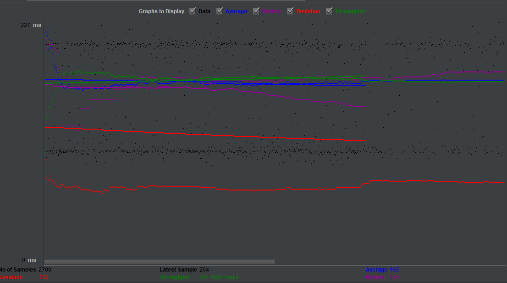

| Single-instance version cases |
Graph Results Screenshot |
Average Query Time(ms) |
Average Search Servlet Time(ms) |
Average JDBC Time(ms) |
Analysis |
| Case 1: HTTP/1 thread |
 |
165 |
13.09 |
13.004 |
Everything is on so taking least time |
| Case 2: HTTP/10 threads |
 |
157 |
62.0 |
61.9 |
Since its 10thread the TJ and TJ are more consistent,which might be differen from 1 thread, since it had less queries to run |
| Case 3: HTTPS/10 threads |
 |
166 |
60.3 |
60.2 |
HTTPS will affect average query time due to extra request, but others are not affected that much |
| Case 4: HTTP/10 threads/No prepared statements |
 |
141 |
54.45 |
54.39 |
Prepare statement is beneficial for many queries, in our case search is only 1 query so its is not that useful |
| Case 5: HTTP/10 threads/No connection pooling |
 |
161 |
70.39 |
66.54 |
As we can see pooling is affecting a lot. Without it each connection must establish new
connection, but pooling will only establish once. |
| Scaled version cases |
Graph Results Screenshot |
Average Query Time(ms) |
Average Search Servlet Time(ms) |
Average JDBC Time(ms) |
Analysis |
| Case 1: HTTP/1 thread |
 |
124 |
13.16 |
13.08 |
Similar to single verion due to lack of number of data. |
| Case 2: HTTP/10 threads |
 |
124 |
26.39 |
26.32 |
Performed better than single server, owing to seperating work load to different servers |
| Case 3: HTTP/10 threads/No prepared statements |
 |
108 |
17.97 |
17.92 |
Same as single instance version, perparestatement did not help that much. |
| Case 4: HTTP/10 threads/No connection pooling |
 |
116 |
25.44 |
22.06 |
Much less than single instance, No pooling always makes difference between TS and TJ large |